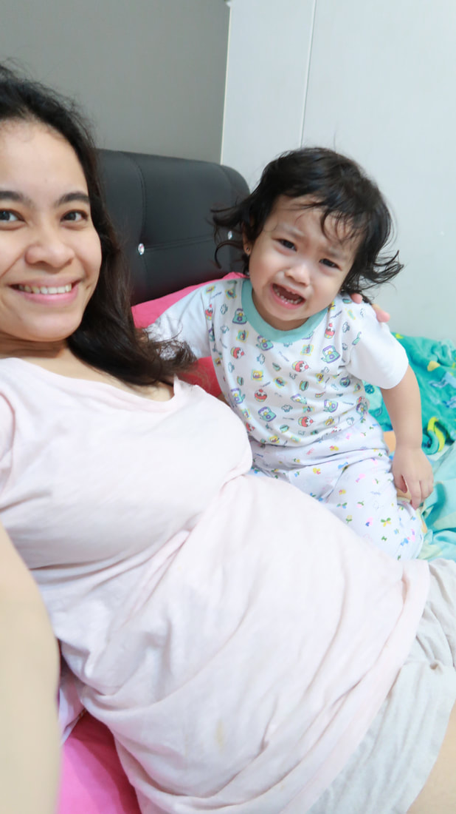
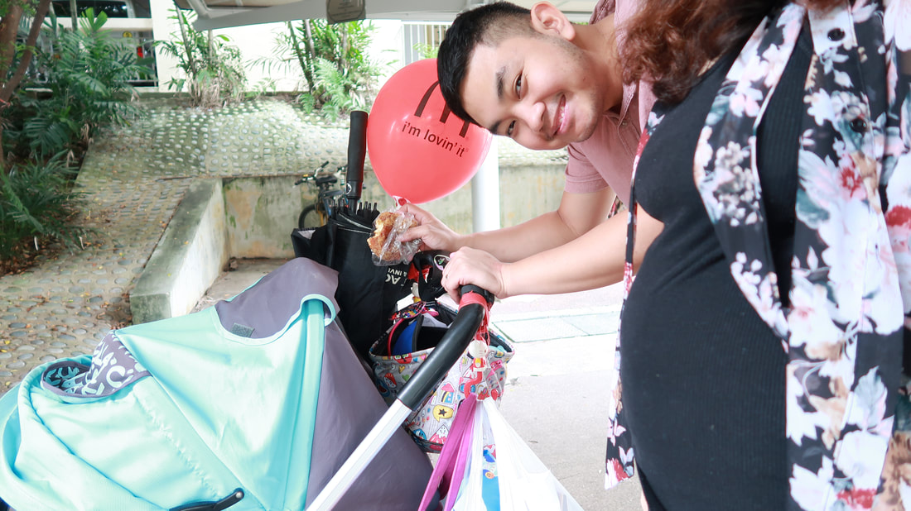
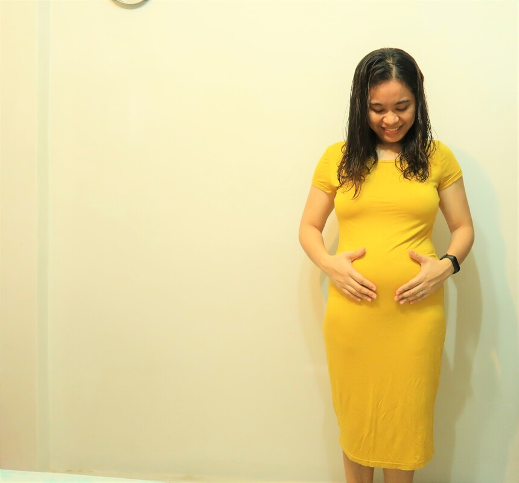
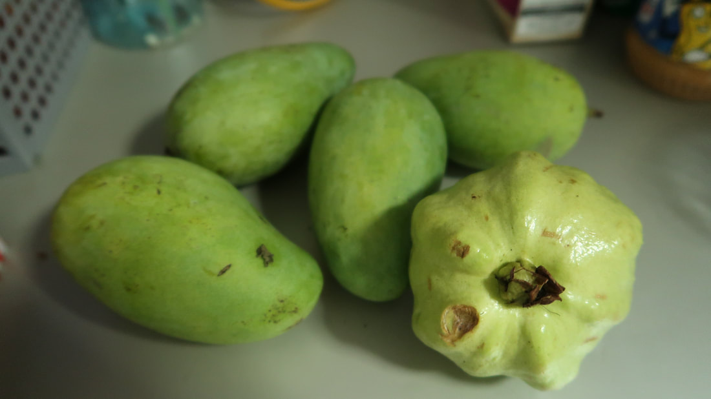

<?xml version="1.0" encoding="UTF-8"?>
<rss version="2.0" xmlns:content="http://purl.org/rss/1.0/modules/content/" xmlns:wfw="http://wellformedweb.org/CommentAPI/" xmlns:dc="http://purl.org/dc/elements/1.1/" >

<channel><title><![CDATA[When God Made You - Pregnancy Journey]]></title><link><![CDATA[https://whengodmadeyou.weebly.com/pregnancy-journey]]></link><description><![CDATA[Pregnancy Journey]]></description><pubDate>Wed, 13 May 2026 05:43:04 +0800</pubDate><generator>Weebly</generator><item><title><![CDATA[What to prepare for my Hospital Bags?]]></title><link><![CDATA[https://whengodmadeyou.weebly.com/pregnancy-journey/what-to-prepare-for-my-hospital-bag]]></link><comments><![CDATA[https://whengodmadeyou.weebly.com/pregnancy-journey/what-to-prepare-for-my-hospital-bag#comments]]></comments><pubDate>Fri, 20 Sep 2019 07:40:07 GMT</pubDate><category><![CDATA[Uncategorized]]></category><guid isPermaLink="false">https://whengodmadeyou.weebly.com/pregnancy-journey/what-to-prepare-for-my-hospital-bag</guid><description><![CDATA[25 weeks ako ngayon, and nasa Singapore pa kami. Plan ko manganak sa Pilipinas. Ngayon pa lang, okay na din na simulan ko ang listahan ng mga dapat ko ding dalhin from Singapore to Philippines.&nbsp;I will try na ilista ano ba ang dapat laman ng aking hospital bag. Through this, machecheck ko kung alin ba ang dapat bilhin or dalhin ko from Singapore or sa Pinas na lang ako bibili.&nbsp;Isa sa iniiwasan ko ay "Overpacking" baka kasi sa kadamihan din ng dala dala ko sa hospital ay mahirapan lang a [...] ]]></description><content:encoded><![CDATA[<div class="paragraph">25 weeks ako ngayon, and nasa Singapore pa kami. Plan ko manganak sa Pilipinas. Ngayon pa lang, okay na din na simulan ko ang listahan ng mga dapat ko ding dalhin from Singapore to Philippines.&nbsp;<br /><br />I will try na ilista ano ba ang dapat laman ng aking hospital bag. Through this, machecheck ko kung alin ba ang dapat bilhin or dalhin ko from Singapore or sa Pinas na lang ako bibili.&nbsp;<br /><br />Isa sa iniiwasan ko ay "Overpacking" baka kasi sa kadamihan din ng dala dala ko sa hospital ay mahirapan lang ang magbibitbit or esle hindi din naman magamit.&nbsp;<br /><br />Sabi nila kapag mga 35 weeks na daw, kailangan daw handa ng lahat ang gamit.&nbsp;<br /><font color="#333333">Which is tama naman, basta kapag nagkatime na, go pack na!</font></div>  <div class="paragraph">A.&nbsp;<strong>LUGGAGE BAG -&nbsp;</strong>maximum of 2 siguro. Yung aking mga cabin size na luggage bag.&nbsp; Hopefully, lahat na ay nasa loob ng bag. Gamit ni Mommy, Daddy, Yanah.&nbsp;<br /><br />B.&nbsp;<strong>BABY BAG for BABY THINGS. </strong>So ito yung isang bag na ibibigay namin sa nurse para sa gamit ni Baby sa NICU.&nbsp;<br /><br /></div>  <h2 class="wsite-content-title" style="text-align:center;"><font size="5">LUGGAGE FOR MOMMY</font></h2>  <div class="paragraph">1.&nbsp;<strong style="color:rgb(40, 40, 40)">Toiletries.&nbsp; </strong><br /><font color="#282828">* <em>Shampoo and Soap (travel size)</em>. Sometimes provided to. Pero magdadala na din ako ng maliit lang para sa mga tagabantay na din. Malamang yung mga nasa Sachet eh oks na. (</font><font color="#530afa">Head and shoulders</font><font color="#282828"> and </font><em><font color="#ff0000">dove</font></em><font color="#282828">)&nbsp;</font><br />* <em>Lotion&nbsp;<br />* Toothpaste and Toothbrush&nbsp;&#8203;</em><br /><em>*&nbsp;Maternity pads</em><br /><em>*&nbsp;<span style="color:rgb(40, 40, 40)">A box of tissue paper</span></em><br />* <em>Papaw<br />* hairbrush and ties</em><br />* moisturizers and UV creams<br />** magcheck ng mga travel size na bottles to bring or prefer sachet na lang**<br /><br /></div>  <div class="paragraph"><strong>2. Clothes</strong><ul style="color:rgb(42, 42, 42)"><li><strong>Bedroom slipper</strong></li><li><strong>Cardigan or Jacket</strong></li></ul><ul style="color:rgb(40, 40, 40)"><li><strong>Nursing bras and underwears</strong></li><li><strong>Plastic bags (para sa mga tubal/dirty clothes</strong></li><li><strong>Socks</strong></li><li><strong style="color:rgb(51, 51, 51)">Going home clothes</strong></li><li><strong style="color:rgb(51, 51, 51)">Towel</strong></li><li><strong style="color:rgb(51, 51, 51)">Labor gowns/night gown basta comfy (</strong><span style="color:rgb(51, 51, 51)">Loose, lightweight clothing (maternity wards can often be hot) and sleepwear)&nbsp;</span></li><li><strong style="color:rgb(51, 51, 51)">changing clothes</strong></li></ul></div>  <div class="paragraph"><strong>3. Electronics</strong><ul><li><strong>Charger (phone and camera)</strong></li><li><strong>Adaptors</strong></li><li><strong>Laptop and charger</strong></li><li><strong>&#8203;powerbank</strong></li><li>Phone</li><li>camera and monopod</li><li>Charged batteries</li></ul></div>  <div class="paragraph">4.&nbsp; Documents<ul><li>Birth certificates/passports/IDs&nbsp;(with photocopies)</li><li>&#8203;SSS docs</li><li><span style="color:rgb(0, 0, 0)">Philhealth docs</span></li><li><span style="color:rgb(0, 0, 0)">ATM</span></li><li><span style="color:rgb(0, 0, 0)">number of OB </span></li><li><strong style="color:rgb(0, 0, 0)">medical records from SG and Phil</strong></li><li><strong style="color:rgb(0, 0, 0)">pen and notepad</strong><br /></li><li><strong style="color:rgb(0, 0, 0)">baby book if have or mommy book</strong><br /></li></ul> <span style="color:rgb(0, 0, 0)">**</span><span style="color:rgb(0, 0, 0)">&nbsp;Check with the hospital or OB ahead of time regarding any&nbsp;</span><strong style="color:rgb(0, 0, 0)">paperwork&nbsp;</strong><span style="color:rgb(0, 0, 0)">you should bring.&nbsp;</span></div>  <h2 class="wsite-content-title" style="text-align:center;"><font size="5">LUGGAGE FOR BABY</font></h2>  <div class="paragraph"><ul style="color:rgb(40, 40, 40)"><li>Disposable diapers (newborn)</li><li>Formula Milk</li><li>Milk bottle</li><li>Wet wipes</li><li>Cotton</li><li>Wrapping /Receiving blanket</li><li>Diaper Rash Cream&nbsp;</li><li>Clothes: Newborn hat/<strong style="color:rgb(51, 51, 51)">Bodysuits/baby vests/mittens/Socks/jacket</strong></li><li><strong style="color:rgb(0, 0, 0)">Baby clothes for the hospital stay</strong><br /></li><li><span style="color:rgb(51, 51, 51)">One&nbsp;</span><strong style="color:rgb(51, 51, 51)">outfit</strong><span style="color:rgb(51, 51, 51)">&nbsp;for the trip home</span></li><li><span style="color:rgb(51, 51, 51)"></span><strong style="color:rgb(0, 0, 0)">Some burp cloths</strong><br /></li></ul></div>  <h2 class="wsite-content-title" style="text-align:center;"><font size="5">OTHERS</font></h2>  <div class="paragraph"><ul><li>Snacks para sa tagabantay</li><li>Snacks for post birth&nbsp;</li><li>Extra pillow and blanket&nbsp;para sa bantay</li><li>kettle</li><li>Gift of Yanah to baby and vice versa</li><li><strong style="color:rgb(0, 0, 0)">Hand-held fan</strong></li><li><strong style="color:rgb(0, 0, 0)">Folder</strong><span style="color:rgb(0, 0, 0)">&nbsp;or&nbsp;</span><strong style="color:rgb(0, 0, 0)">large envelope</strong><span style="color:rgb(0, 0, 0)">. Use this to keep hospital handouts (</span><span style="color:rgb(0, 0, 0)">receipts, copies of records, and other papers in one place.)</span></li><li><strong style="color:rgb(0, 0, 0)">Cooler bag</strong></li><li><strong style="color:rgb(0, 0, 0)">Insulated cups</strong></li></ul></div>  <h2 class="wsite-content-title" style="text-align:center;"><font size="5">LUGGAGE FOR DADDY</font></h2>  <div class="paragraph">* Chargers and phones<br />* Toiletries<br />*&nbsp;<span style="color:rgb(0, 0, 0)">Comfortable&nbsp;</span><strong style="color:rgb(0, 0, 0)">shoes&nbsp;</strong><span style="color:rgb(0, 0, 0)">and a few changes of comfortable&nbsp;</span><strong style="color:rgb(0, 0, 0)">clothes<br />*&nbsp;Snacks&nbsp;</strong><span style="color:rgb(0, 0, 0)">and&nbsp;</span><strong style="color:rgb(0, 0, 0)">drinks<br /></strong>* download app&nbsp;<span style="color:rgb(0, 0, 0)">&nbsp;</span>timing contractions<br />* Money&nbsp;<span style="color:rgb(0, 0, 0)">(or a&nbsp;</span><strong style="color:rgb(0, 0, 0)">credit card</strong><span style="color:rgb(0, 0, 0)">)</span><br /></div>]]></content:encoded></item><item><title><![CDATA[Early Signs o Sintomas ng pagbubuntis?]]></title><link><![CDATA[https://whengodmadeyou.weebly.com/pregnancy-journey/early-signs-o-sintomas-ng-pagbubuntis]]></link><comments><![CDATA[https://whengodmadeyou.weebly.com/pregnancy-journey/early-signs-o-sintomas-ng-pagbubuntis#comments]]></comments><pubDate>Wed, 18 Sep 2019 10:57:13 GMT</pubDate><category><![CDATA[Uncategorized]]></category><guid isPermaLink="false">https://whengodmadeyou.weebly.com/pregnancy-journey/early-signs-o-sintomas-ng-pagbubuntis</guid><description><![CDATA[So, hayun na nga po, as of now, I am 25 weeks! Alam ko na po na buntis ako at itong mga details na 'to:EDD (Expected Delivery Date): Jan 1 or 2, 2020*Your EDD is 40 weeks from the first day of your last menstrual period (LMP)*&nbsp;*Due date is only an estimate* (pero yung kay Yanah, sakto talaga!)*most babies are born between 38 and 42 weeks from the first day of their mom's LMP and only a small percentage of women actually deliver on their due date.Pero sabi ng una kong OB, pwede na akong mang [...] ]]></description><content:encoded><![CDATA[<div class="paragraph" style="text-align:left;">So, hayun na nga po, as of now, I am 25 weeks! Alam ko na po na buntis ako at itong mga details na 'to:<br /><br />EDD <span style="color:rgb(0, 0, 0)">(Expected Delivery Date)</span>: Jan 1 or 2, 2020<br /><em><font size="3">*<span style="color:rgb(0, 0, 0)">Your EDD is 40 weeks from the first day of your last menstrual period (LMP)*&nbsp;</span></font><br /><span style="color:rgb(0, 0, 0)">*Due date is only an estimate</span><font size="3">* (pero yung kay Yanah, sakto talaga!)</font><br /><font size="3">*<span style="color:rgb(0, 0, 0)">most babies are born between 38 and 42 weeks from the first day of their mom's LMP and only a small percentage of women actually deliver on their due date.</span></font></em><br /><br /><font size="4">Pero sabi ng una kong OB, pwede na akong manganak after Christmas.&nbsp;<br /><strong>OUR PRAYER: </strong>Ang prayer namin sana "New year baby" si Baby namin.. hehe..&nbsp;</font><br />Pero syempre kung anong will ng Lord. Basta healthy si Baby and safe si mommy :).<br /><br />Regarding sa mga symptoms:<ul><li>Iba iba ang nararamdaman. Iba ang naramdaman ko marahil noong kay Yanah at sa baby namin ngayon. Actually yung iba limot ko na. Gaya ng sakit noong pinanganak ko siya, halos hindi ko na siya tanda.&nbsp;</li><li>Yung mga symptoms ay parang kagaya kapag magkakameron ka or dadatnan ka.&nbsp;</li></ul><br /><strong style="color:rgb(42, 42, 42)">ANONG NARARAMDAMAN KO,&nbsp;physically</strong><span style="color:rgb(42, 42, 42)">&nbsp;Noong hindi ko pa alam na buntis ako. </span><ul><li><span style="color:rgb(42, 42, 42)"><strong>HIP PAIN or&nbsp;nasakit ang mga balakang. </strong>May mga time na nasakit balakang ko at tiyan ko. Which is confusing kasi kapag mentrual period ko, minsan nararanasan ko din 'to. Lalo na kapag malapit na. </span></li><li><strong>Tender, swollen breasts.</strong>&nbsp;<span style="color:rgb(42, 42, 42)">Pansin ko din nasakit ang breast ko. Lalo na kapag natutuunan ni Yanah or nasasagi. Which is dati naman noong breastfeeeding pa si Yanah eh&nbsp;wala ngang pakiramdam.&nbsp; Parang ang bigat bigat and fuller feeling.&nbsp;</span></li><li><strong>Fatigue.</strong> Sabi nila, yung dahil daw yun ng "<span style="color:rgb(0, 0, 0)">levels of the hormone progesterone" Tumataas!</span></li></ul><br /><br /><span style="color:rgb(0, 0, 0)">At 4 weeks (CONFIRMED na through PT) - FIRST TRIMESTER<br /><font size="3">*First Trimester: week 1-12 (3 months)</font></span><br /><br /><span style="color:rgb(42, 42, 42)">Ngayong alam ko na at confirmed na may nasakit pa din. Nasakit pa din ang breast ko. At paminsan minsan ay nasakit ang balakang ko. </span><ul><li><span style="color:rgb(42, 42, 42)"><strong>Maihi na ako.</strong> </span></li><li><span style="color:rgb(42, 42, 42)"><strong>At may time na hinihingal.</strong> (wow ha, hindi pa yan malaki ang tiyan). Medyo malaki tiyan. But feeling ko eh mga taba pa yun or bloated lang ako.&nbsp;</span></li><li><strong>Nausea at feeling na nasusuka pero hindi. </strong>"Morning sickness" kung tawagin but can<span style="color:rgb(0, 0, 0)">&nbsp;strike at any time of the day or night. Noong kay Yanah, kapag lang nasa bahay ako, nararamdaman ko, pero never kapag nasa office ako. Pero ngayon, througout the day damang dama!</span></li><li><span style="color:rgb(0, 0, 0)">Maselan sa mga amoy! Ayaw ko ng amoy ng pork at amoy kapag nagluluto. Kaya simula ng nabuntis ako, hindi na ako ang nagluluto. Thank God sa asawa ko na napakabait, wala akong masabi. Siya ang araw araw&nbsp; na nagluluto para sa amin!</span><a href="http://www.kidspot.com.au/Pregnancy-First-trimester-Staying-healthy-with-morning-sickness+1859+113+article.htm" target="_blank">morning sickness</a><span style="color:rgb(0, 0, 0)">.</span></li><li><strong>Gutumin ako!</strong> Ito yung takot ako ng magutom. Pagkakakain ko gutom na naman ako. Pero hindi ko alam ang gusto kong kainin. May time na gusto ko ng kumain, pero d ko alam ang gusto ko. Ang hirap! Sa madaling araw ramdam ko ang gutom ko or bago maghating gabi eh gutom na agad ako.&nbsp;</li></ul><ul style="color:rgb(42, 42, 42)"><li><strong>Heartburn.&nbsp;</strong>&nbsp;May mga nabasa ako na usually ang heartburn mga 3rd tri mararanasan. Pero nagigising ako na masakit ang dibdib ko. Kaya kailangan ko ng mataas na unan lagi. Tapos hindi pwede na agad akong babangon or kikilos, kasi sobrang as in masakit ang dibdib ko.</li><li><strong>Cravings!&nbsp;</strong>Pansin ko, ang hilig ko sa maasim. Palagi ako ngpapabili ng guava. Which is noong panahon ni Yanah hindi ata kami nagpanagpo ng Bayabas! Pero sobrang hilig ko sa watermelon naman noong kay Yanah.&nbsp;</li><li><strong>Constipation.&nbsp;</strong>Thank God! Hindi ko yan nararansan ngayon. Pero tanda ko sobrang isa yan sa problema ko noong panahon ni Yanah!</li><li><strong>Faintness and Dizziness.&nbsp;</strong>Unforgettable experience ko, June 12 and June 13. Dinala ako sa emergency room kasi natakot ang Dy. Nahimatay daw ako! Actually,&nbsp; dahil sa gutom, napakain ako ng tinapay na Gardenia na hindi ko naman usual kinakain. Around 12:30Am ko kinain. Mga pasadong 2am, iba na ang nararamdan ko. Gusto kong sumuka, tapos iba ang sakit ng dibdib. In short, ngvomit ako at naliyo. Nagtry pumoops. Then nahimatay ako! Buti na lang, nakaupo ako that time at kasama ko ang asawa ko sa banyo.&nbsp;</li><li><strong>Emotional at Senstitive.&nbsp;</strong>Napakasensitive ko. May time na inis na inis ako Kay Adrian.&nbsp;</li><li><strong>Missed Period.&nbsp;</strong>&nbsp;Ilang araw na akong delayed. Hindi ko masyadong binantayan. Pero isang gabi, parang sabi ko ay delayed na nga ata ako. Tapos un. nag-PT nga ako! Positive!</li><li>"Feeling" mo buntis ka. Ramdam mo na iba!</li></ul><br /><strong style="color:rgb(42, 42, 42)">My first trimester:&nbsp;</strong><span style="color:rgb(42, 42, 42)">Sobrang mas feel na feel ko ang sakit ng ulo. Lalo pa at hindi ako nagwowork. Noong kay Yanah, kapag nasa office ako as in wala ako ng nararamdaman na sakit ng ulo. Pero ngayon, ramdam na ramdam ko.&nbsp;</span><br /><br /><strong style="color:rgb(42, 42, 42)"><u><em>Things to watch out:&nbsp;</em></u></strong><ul style="color:rgb(42, 42, 42)"><li>Spotting. Early signs din pero thank God hindi ko naman sha naexperience. Normal yun kasi&nbsp;<span style="color:rgb(0, 0, 0)">it is known as implantation bleeding, it happens when the fertilised egg attaches to the lining of the uterus - about 10 to 14 days after fertilisation.&nbsp;&nbsp;</span>&#8203;</li></ul> <strong>My first trimester: </strong>Sobrang mas feel na feel ko ang sakit ng ulo. Lalo pa at hindi ako nagwowork. Noong kay Yanah, kapag nasa office ako as in wala ako ng nararamdaman na sakit ng ulo. Pero ngayon, ramdam na ramdam ko.&nbsp;<br /><br /><strong><u><em><span style="color:rgb(42, 42, 42)">Things to watch out:&nbsp;</span></em></u></strong><ul><li>Spotting. Early signs din pero thank God hindi ko naman sha naexperience. Normal yun kasi&nbsp;<span style="color:rgb(0, 0, 0)">it is known as implantation bleeding, it happens when the fertilised egg attaches to the lining of the uterus - about 10 to 14 days after fertilisation.&nbsp;&nbsp;</span></li></ul></div>  <div class="paragraph"><strong>Heartburn.&nbsp;</strong>&nbsp;May mga nabasa ako na usually ang heartburn mga 3rd tri mararanasan. Pero nagigising ako na masakit ang dibdib ko. Kaya kailangan ko ng mataas na unan lagi. Tapos hindi pwede na agad akong babangon or kikilos, kasi sobrang as in masakit ang dibdib ko.&nbsp;<br /><br /><strong>Cravings!&nbsp;</strong>Pansin ko, ang hilig ko sa maasim. Palagi ako ngpapabili ng guava. Which is noong panahon ni Yanah hindi ata kami nagpanagpo ng Bayabas! Pero sobrang hilig ko sa watermelon naman noong kay Yanah.&nbsp;<br /><br /><strong>Constipation.&nbsp;</strong>Thank God! Hindi ko yan nararansan ngayon. Pero tanda ko sobrang isa yan sa problema ko noong panahon ni Yanah!&nbsp;<br /><br /><strong>Faintness and Dizziness.&nbsp;</strong>Unforgettable experience ko, June 12 and June 13. Dinala ako sa emergency room kasi natakot ang Dy. Nahimatay daw ako! Actually,&nbsp; dahil sa gutom, napakain ako ng tinapay na Gardenia na hindi ko naman usual kinakain. Around 12:30Am ko kinain. Mga pasadong 2am, iba na ang nararamdan ko. Gusto kong sumuka, tapos iba ang sakit ng dibdib. In short, ngvomit ako at naliyo. Nagtry pumoops. Then nahimatay ako! Buti na lang, nakaupo ako that time at kasama ko ang asawa ko sa banyo.&nbsp;<br /><br /><strong>Emotional at Senstitive.&nbsp;</strong>Napakasensitive ko. May time na inis na inis ako Kay Adrian.&nbsp;&nbsp;<br /><br /><strong>Missed Period.&nbsp;</strong>&nbsp;Ilang araw na akong delayed. Hindi ko masyadong binantayan. Pero isang gabi, parang sabi ko ay delayed na nga ata ako. Tapos un. nag-PT nga ako! Positive! "Feeling" mo buntis ka. Ramdam mo na iba!<br />&#8203;<br /><strong>My first trimester:&nbsp;</strong>Sobrang mas feel na feel ko ang sakit ng ulo. Lalo pa at hindi ako nagwowork. Noong kay Yanah, kapag nasa office ako as in wala ako ng nararamdaman na sakit ng ulo. Pero ngayon, ramdam na ramdam ko.&nbsp;<br /><br /><strong><u><em>Things to watch out:&nbsp;</em></u></strong>&nbsp;Spotting. Early signs din pero thank God hindi ko naman sha naexperience. Normal yun kasi&nbsp;<span style="color:rgb(0, 0, 0)">it is known as implantation bleeding, it happens when the fertilised egg attaches to the lining of the uterus - about 10 to 14 days after fertilisation.&nbsp;&nbsp;</span>&#8203;&#8203;</div>  <div><div class="wsite-multicol"><div class="wsite-multicol-table-wrap" style="margin:0 -15px;"> 	<table class="wsite-multicol-table"> 		<tbody class="wsite-multicol-tbody"> 			<tr class="wsite-multicol-tr"> 				<td class="wsite-multicol-col" style="width:33.333333333333%; padding:0 15px;"> 					 						  <div><div class="wsite-image wsite-image-border-none " style="padding-top:10px;padding-bottom:10px;margin-left:0px;margin-right:0px;text-align:center"> <a>  </a> <div style="display:block;font-size:90%">June 13, 2019, 12:00AM nasa 7 eleven si Daddy, dahil sobrang gutom na gutom ako, nagpabanili ako sa Dy ng pasalubong bago siya umuwi. </div> </div></div>   					 				</td>				<td class="wsite-multicol-col" style="width:33.333333333333%; padding:0 15px;"> 					 						  <div><div class="wsite-image wsite-image-border-none " style="padding-top:10px;padding-bottom:10px;margin-left:0px;margin-right:0px;text-align:right"> <a>  </a> <div style="display:block;font-size:90%">June 13,2019 , 3:31Am Na-emergency ako nito. Kasi nahimatay ako. Tapos sabi ng doctor low blood din nga daw ako. </div> </div></div>   					 				</td>				<td class="wsite-multicol-col" style="width:33.333333333333%; padding:0 15px;"> 					 						  <div><div class="wsite-image wsite-image-border-none " style="padding-top:10px;padding-bottom:10px;margin-left:0px;margin-right:0px;text-align:center"> <a>  </a> <div style="display:block;font-size:90%">Nagpadagdag pa ako ng Pringles kasi nagcrave ako.  </div> </div></div>   					 				</td>			</tr> 		</tbody> 	</table> </div></div></div>]]></content:encoded></item><item><title><![CDATA[SSS Maternity Benefit]]></title><link><![CDATA[https://whengodmadeyou.weebly.com/pregnancy-journey/sss-maternity-benefit]]></link><comments><![CDATA[https://whengodmadeyou.weebly.com/pregnancy-journey/sss-maternity-benefit#comments]]></comments><pubDate>Sat, 14 Sep 2019 16:00:00 GMT</pubDate><category><![CDATA[Uncategorized]]></category><guid isPermaLink="false">https://whengodmadeyou.weebly.com/pregnancy-journey/sss-maternity-benefit</guid><description><![CDATA[Super natatawa ako sa reaction ni Yanah dito.&nbsp;Naghihintay kami ng train. Papunta kaming Church.&nbsp;                After Church, pumunta kami sa SSS Office, sa Lucky Plaza.OUR AGENDA:SSS office: Ipacancel/ icheck if cancelled na ang cheke ko na natanggap last time. Hindi ko kasi naencash. Kasi hindi ko alam na ready na pala. Hindi ko nakuha agad sa office.&nbsp;SSS office: Notify ang SSS for second pregnancy. So hayun, as usual, may pila sa SSS office. Pero habang naghihintay, pumunta mun [...] ]]></description><content:encoded><![CDATA[<div class="paragraph">Super natatawa ako sa reaction ni Yanah dito.&nbsp;<br />Naghihintay kami ng train. Papunta kaming Church.&nbsp;<br /></div>  <div><div class="wsite-image wsite-image-border-none " style="padding-top:10px;padding-bottom:10px;margin-left:0;margin-right:0;text-align:center"> <a>  </a> <div style="display:block;font-size:90%"></div> </div></div>  <div><div class="wsite-image wsite-image-border-none " style="padding-top:10px;padding-bottom:10px;margin-left:0;margin-right:0;text-align:center"> <a>  </a> <div style="display:block;font-size:90%"></div> </div></div>  <div class="paragraph">After Church, pumunta kami sa SSS Office, sa Lucky Plaza.<br /><br />OUR AGENDA:<ul><li><strong>SSS office: </strong>Ipacancel/ icheck if cancelled na ang cheke ko na natanggap last time. Hindi ko kasi naencash. Kasi hindi ko alam na ready na pala. Hindi ko nakuha agad sa office.&nbsp;</li><li><strong>SSS office: </strong>Notify ang SSS for second pregnancy.</li></ul> So hayun, as usual, may pila sa SSS office. Pero habang naghihintay, pumunta muna ako sa PNB to check if ok na ang aking Account.&nbsp; Requirements kasi sa SSS na may Phil bank account para doon nila idarecho ang benefit.&nbsp;<br /><br /><strong>SSS Office. </strong>Ininform ako na ok na daw naman ang checke, meaning, nacancel na.&nbsp;&#8203;<br /><br /></div>  <div><div class="wsite-image wsite-image-border-none " style="padding-top:10px;padding-bottom:10px;margin-left:0;margin-right:0;text-align:center"> <a>  </a> <div style="display:block;font-size:90%"></div> </div></div>  <div class="paragraph">So eto ang next ko na dapat gawin. Kaya bumalik ako sa PNB. Kasi need nila ng deposit slip na kita ang account number.&nbsp;<br /><br /><strong>PNB.&nbsp;</strong>Kapag pala nagdeposit ka, may fee na 5dollars. Anyways, no choice din naman.&nbsp;<br /><strong>&#8203;Photocopy.&nbsp;</strong>Mahal ang pa-photocopy sa Lucky plaza. Parang 1 dollar ata ang isang page. So mas maganda ready na pagpunta doon. Buti na lang may photocopy akong dala ng aking passport.&nbsp;<br /><a href="../living-with-a-toddler/received-free-alkaline-water-system-by-eight-stars-alkaline-system.html">Received Free Alkaline Water System by&nbsp;Eight Stars Alkaline System</a></div>  <div class="paragraph"><strong>Kailan ko matatanggap ang BENEFIT? </strong>Sabi nila ay mga 2-3 months daw ang processing and darecho na sa account ko. Thank you, Lord! Ok na din, pandagdag sa gastos ko sa Pinas.&nbsp;<br /></div>  <h2 class="wsite-content-title"><font size="5">NEW SSS CONTRIBUTION&nbsp;</font></h2>  <div class="paragraph">Starting April 2019, nagpabago na ang contribution. So mas malaki na din ang benefit na matatanggap.&nbsp;<br /><br />KASO... nalate ako! kung manganganak ako ng December 2019, wala akong matatanggap na benefit. huhu.. Kasi dapat last month pa ako ngbayad ng contribution para macover ako. ANyways, hopefully January 2020 ako manganak!<br /><br /></div>  <div class="paragraph"><strong>Magkano ang binayadan ko at mula saang bwan? </strong>Need kong magbayad ng mula Jan 2019 to Sept 2019 para covered ako. Sabi mga 40K din daw matatanggap. Ok na ok!!!<br /></div>  <div class="paragraph">Ininform din ako na mininum og 120 months contribution daw para makakuha din ako ng retirement benefit. So incase man na hindi ko magamit sa Maternity, okey lang din. Atleast. May risk pero oks lang. Wala din namang makakapagsabi kung kelan talaga ang due.&nbsp;<br /><br />But we are standing in prayer.&nbsp;<br /></div>  <div><div class="wsite-multicol"><div class="wsite-multicol-table-wrap" style="margin:0 -15px;"> 	<table class="wsite-multicol-table"> 		<tbody class="wsite-multicol-tbody"> 			<tr class="wsite-multicol-tr"> 				<td class="wsite-multicol-col" style="width:50%; padding:0 15px;"> 					 						  <div><div class="wsite-image wsite-image-border-none " style="padding-top:10px;padding-bottom:10px;margin-left:0;margin-right:0;text-align:center"> <a>  </a> <div style="display:block;font-size:90%"></div> </div></div>   					 				</td>				<td class="wsite-multicol-col" style="width:50%; padding:0 15px;"> 					 						  <div><div class="wsite-image wsite-image-border-none " style="padding-top:10px;padding-bottom:10px;margin-left:0;margin-right:0;text-align:center"> <a>  </a> <div style="display:block;font-size:90%"></div> </div></div>   					 				</td>			</tr> 		</tbody> 	</table> </div></div></div>  <div class="paragraph">Thank you, Lord kasi super productive ng araw namin na 'to. Ang daming natapos at nagawa.&nbsp;</div>  <div><div class="wsite-image wsite-image-border-none " style="padding-top:10px;padding-bottom:10px;margin-left:0px;margin-right:0px;text-align:center"> <a>  </a> <div style="display:block;font-size:90%">Sobrang walang pila sa orderan sa Jollibee pero mejo matagal pa din ang serving ng food. Pero Thank you, Lord pa din!</div> </div></div>  <div><div class="wsite-image wsite-image-border-none " style="padding-top:10px;padding-bottom:10px;margin-left:0;margin-right:0;text-align:center"> <a>  </a> <div style="display:block;font-size:90%"></div> </div></div>  <div><div class="wsite-multicol"><div class="wsite-multicol-table-wrap" style="margin:0 -15px;"> 	<table class="wsite-multicol-table"> 		<tbody class="wsite-multicol-tbody"> 			<tr class="wsite-multicol-tr"> 				<td class="wsite-multicol-col" style="width:50%; padding:0 15px;"> 					 						  <div><div class="wsite-image wsite-image-border-none " style="padding-top:10px;padding-bottom:10px;margin-left:0;margin-right:0;text-align:center"> <a>  </a> <div style="display:block;font-size:90%"></div> </div></div>   					 				</td>				<td class="wsite-multicol-col" style="width:50%; padding:0 15px;"> 					 						  <div><div class="wsite-image wsite-image-border-none " style="padding-top:10px;padding-bottom:10px;margin-left:0px;margin-right:0px;text-align:center"> <a>  </a> <div style="display:block;font-size:90%">Nagkwekwento about kay Jonah.</div> </div></div>   					 				</td>			</tr> 		</tbody> 	</table> </div></div></div>]]></content:encoded></item><item><title><![CDATA[12 weeks and 6 days Pregnant]]></title><link><![CDATA[https://whengodmadeyou.weebly.com/pregnancy-journey/12-weeks-and-6-days-pregnant]]></link><comments><![CDATA[https://whengodmadeyou.weebly.com/pregnancy-journey/12-weeks-and-6-days-pregnant#comments]]></comments><pubDate>Tue, 25 Jun 2019 16:00:00 GMT</pubDate><category><![CDATA[Uncategorized]]></category><guid isPermaLink="false">https://whengodmadeyou.weebly.com/pregnancy-journey/12-weeks-and-6-days-pregnant</guid><description><![CDATA[    June 26, 2019 12weeks and 6 days       June 23, 2019 12 weeks and 3 days  [...] ]]></description><content:encoded><![CDATA[<div><div class="wsite-image wsite-image-border-none " style="padding-top:10px;padding-bottom:10px;margin-left:0px;margin-right:0px;text-align:center"> <a>  </a> <div style="display:block;font-size:90%">June 26, 2019 12weeks and 6 days</div> </div></div>  <div><div class="wsite-image wsite-image-border-none " style="padding-top:10px;padding-bottom:10px;margin-left:0px;margin-right:0px;text-align:center"> <a>  </a> <div style="display:block;font-size:90%">June 23, 2019 12 weeks and 3 days</div> </div></div>]]></content:encoded></item><item><title><![CDATA[7 weeks Pregnant]]></title><link><![CDATA[https://whengodmadeyou.weebly.com/pregnancy-journey/7-weeks-pregnant]]></link><comments><![CDATA[https://whengodmadeyou.weebly.com/pregnancy-journey/7-weeks-pregnant#comments]]></comments><pubDate>Fri, 17 May 2019 16:00:00 GMT</pubDate><category><![CDATA[Uncategorized]]></category><guid isPermaLink="false">https://whengodmadeyou.weebly.com/pregnancy-journey/7-weeks-pregnant</guid><description><![CDATA[      [...] ]]></description><content:encoded><![CDATA[<div><div class="wsite-image wsite-image-border-none " style="padding-top:10px;padding-bottom:10px;margin-left:0;margin-right:0;text-align:center"> <a>  </a> <div style="display:block;font-size:90%"></div> </div></div>]]></content:encoded></item><item><title><![CDATA[Buntis Craving for maasim and Guava!]]></title><link><![CDATA[https://whengodmadeyou.weebly.com/pregnancy-journey/buntis-craving-for-maasim-and-guava]]></link><comments><![CDATA[https://whengodmadeyou.weebly.com/pregnancy-journey/buntis-craving-for-maasim-and-guava#comments]]></comments><pubDate>Tue, 07 May 2019 16:00:00 GMT</pubDate><category><![CDATA[Uncategorized]]></category><guid isPermaLink="false">https://whengodmadeyou.weebly.com/pregnancy-journey/buntis-craving-for-maasim-and-guava</guid><description><![CDATA[      [...] ]]></description><content:encoded><![CDATA[<div><div class="wsite-image wsite-image-border-none " style="padding-top:10px;padding-bottom:10px;margin-left:0;margin-right:0;text-align:center"> <a>  </a> <div style="display:block;font-size:90%"></div> </div></div>]]></content:encoded></item></channel></rss>